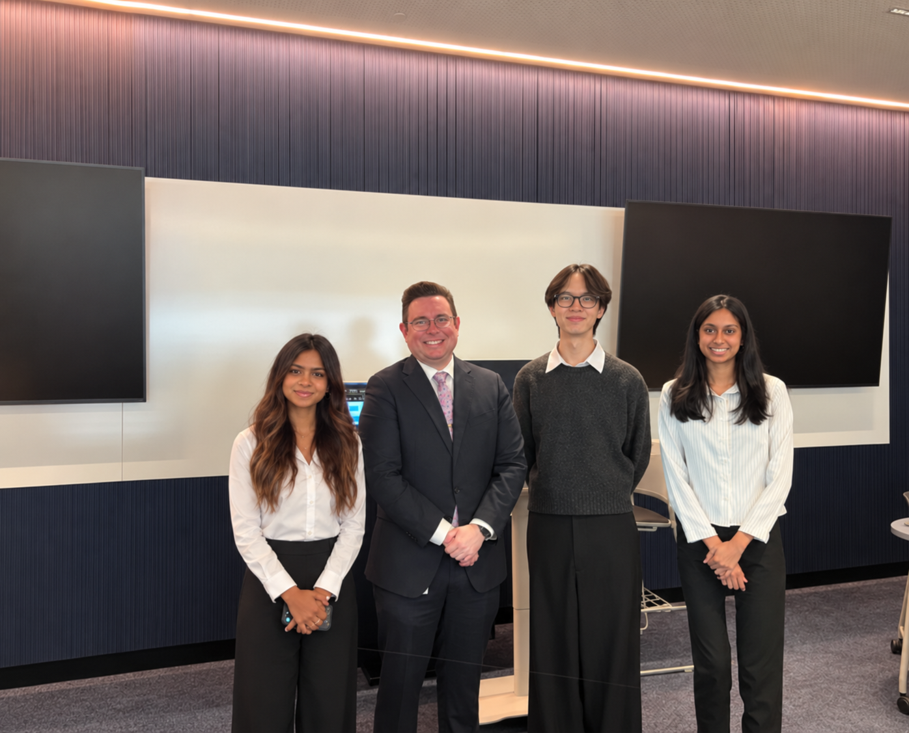
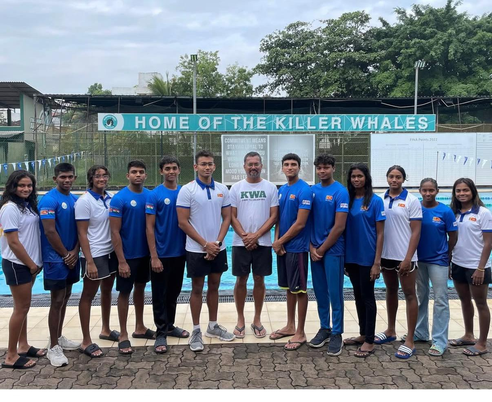
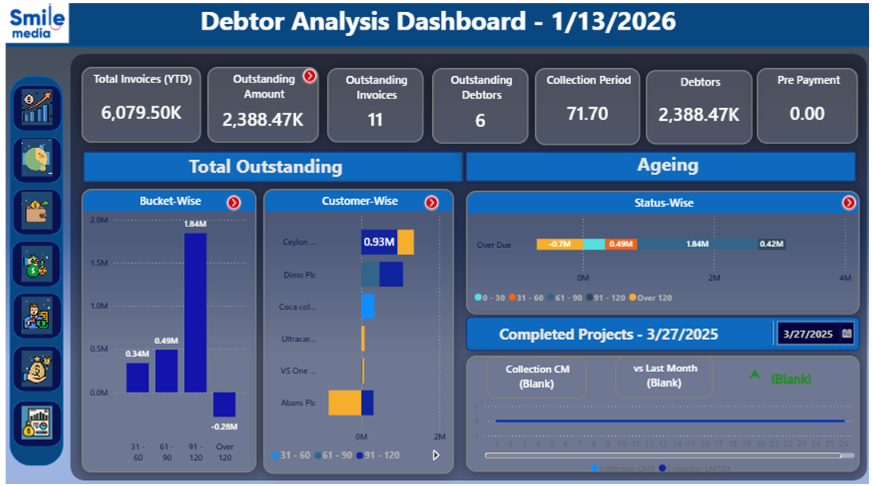
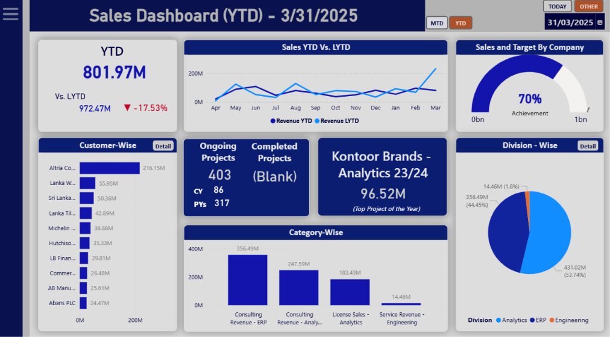
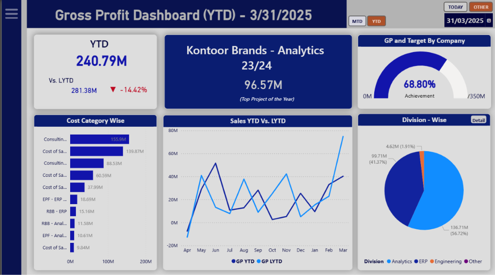
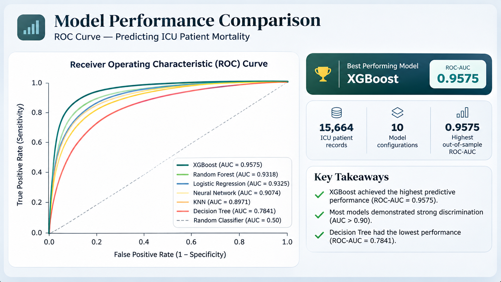

01 / EDUCATION
Monash University
Bachelor of Commerce
Major: Data Analytics
Minors: Finance and Economics
Melbourne, Australia · 2023–2026

I'm Tricia De Rose, a Monash University Bachelor of Commerce graduate with a background in Data Analytics, Finance and Economics.
My experience spans business intelligence, financial analysis, predictive modelling and strategic consulting. I bring together analytical thinking, technical expertise and commercial understanding to uncover meaningful insights, solve complex problems and support informed decision-making.
Driven by curiosity and continuous learning, I'm passionate about applying data and strategic thinking to create value across industries, organisations and emerging business challenges.
.png)
I am a Monash University Bachelor of Commerce graduate with a background spanning data analytics, finance and economics. My professional and academic experiences have shaped my ability to approach business challenges from multiple perspectives, combining quantitative analysis with financial understanding and strategic thinking.
Through my experience in business intelligence, financial reporting and consulting, I have worked with complex information to evaluate organisational performance, identify patterns and communicate insights that support decision-making. My academic projects have further strengthened my capabilities in machine learning, statistical modelling, database development and data visualisation.
Beyond academics and professional experience, representing Sri Lanka as a national swimming team athlete and achieving multiple national records and championship titles have played a defining role in my personal development. Over 14 years of competitive swimming, including international representation, I have developed discipline, resilience, leadership, adaptability and the ability to perform under pressure, qualities I carry into every professional challenge.
I am motivated by opportunities to learn, solve meaningful problems and contribute to organisations through thoughtful analysis, innovation and continuous improvement.
Bachelor of Commerce
Major: Data Analytics
Minors: Finance and Economics
Melbourne, Australia · 2023–2026

Former Sri Lanka National Swimming Team athlete with international competitive experience, national records and championship titles.

During my Data Analyst internship at VS Information Systems, I worked with Power BI dashboards to analyse revenue, profitability, project performance and financial obligations, supporting clearer business performance reporting.
Revenue, project profitability and debtor analysis through Power BI.


Analytical focus: Revenue trends, project-level financial performance, profitability and receivables ageing.
VIEW FULL SMILE MEDIA DASHBOARD ↗Sales performance, gross profitability and financial reporting through Power BI.


Analytical focus: Sales trends, gross profit performance, project-level financial results and creditor exposure.
VIEW FULL ALTRIA DASHBOARD ↗Applying machine learning and statistical modelling to uncover patterns, assess risks and generate meaningful predictions from complex datasets.
Developed and evaluated classification models using the MIMIC-III critical care dataset. Analysed patient records, compared predictive algorithms and evaluated model performance to identify the strongest approach to mortality risk prediction.
VIEW FULL MACHINE LEARNING PROJECT ↗Cleaned clinical data, handled missing values and prepared features for modelling.
Compared Logistic Regression, KNN, Decision Trees, Random Forest, Neural Networks and boosting methods.
Assessed classification performance using out-of-sample ROC-AUC and Kaggle scores.
XGBoost achieved the strongest reported performance with an out-of-sample ROC-AUC of 0.9575.

Applying analytical research, commercial understanding and strategic thinking to address organisational challenges and develop practical, evidence-based recommendations.
Collaborated on a university consulting engagement examining procurement practices, supplier governance, ESG considerations and modern slavery risks. Applied strategic research and procurement analysis to develop recommendations for stronger supplier oversight.
Assessed supplier expenditure, labour intensity and operational criticality to identify risk exposure.
Examined ethical sourcing, supplier compliance and sustainability through relevant UN SDGs.
Applied SWOT, PESTEL and supplier prioritisation frameworks to evaluate organisational challenges.
Contributed to a proposed three-year Supplier Excellence Program focused on governance and accountability.
Developed a proposed supplier governance framework and phased implementation roadmap to support transparent, accountable and sustainable procurement practices. Strengthened my capabilities in strategic research, risk assessment and stakeholder communication.
Strengthen documentation, supplier onboarding and governance ownership.
Introduce supplier assessments, training and risk-based monitoring.
Develop compliance reviews, performance monitoring and continuous improvement.
My academic work spans statistical research, database development, economic analysis and interactive data visualisation. These projects demonstrate my ability to investigate complex questions and translate quantitative findings into meaningful insights.
Developed an interactive scrolling visualisation exploring bushfire patterns, climate conditions, ignition sources, geographic risk and environmental impacts across Australia.
Transformed complex environmental data into an accessible, interactive visual narrative.
Conducted quantitative research into public attitudes towards proposed social media restrictions for children under 16, examining demographic and behavioural factors.
Applied hypothesis testing and statistical modelling to develop evidence-based findings.
Applied relational database principles and Oracle SQL to organise, query and analyse structured datasets.
Strengthened skills in structured data management, efficient querying and reliable analytical workflows.
Applied economic theory and analytical research to investigate market behaviour, competition, pricing and business decision-making.
Connected economic theory with real-world business challenges and market outcomes.